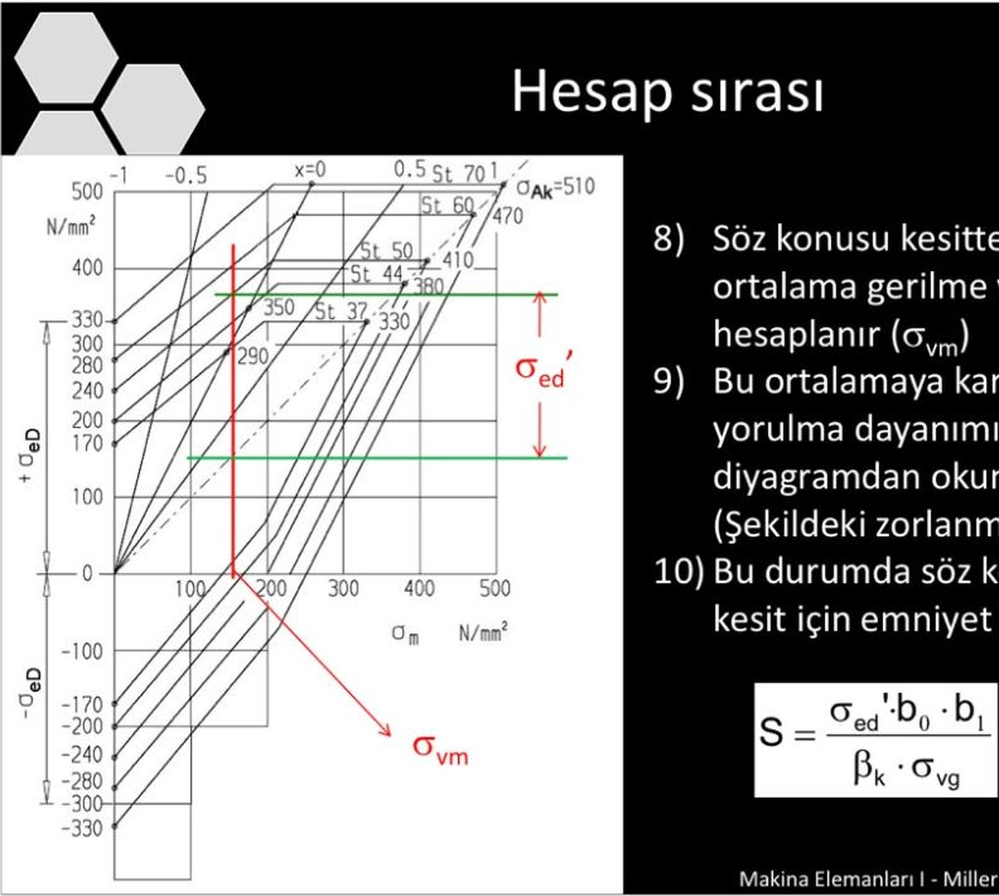

Makina Elemanları I · Sınav hazırlığı · “4 Örnek (Statik + Dinamik)” PDF'inin devamı
Önceki PDF'te her soruyu iki kere hesapladık: bir kere statik kuvvetle, bir kere dinamik (±) kuvvetle. Statiği 136 ile, dinamiği ≈62 ile karşılaştırdık.
Hoca dinamik kısmı Smith diyagramıyla kontrol etmemizi istiyor. Sebebi şu: bir parçanın ne kadar salınıma (± kısmına) dayanabileceği, üstüne ne kadar sabit yük bindiğine bağlıdır. Sabit yük ne kadar çoksa salınım payı o kadar azalır. Tek bir “62” sayısı bunu göstermez, Smith diyagramı gösterir.
F = 12 000 ± 4000 N gibi bir yükte iki parça var:
Önceki PDF'teki hesapların hiçbiri boşa gitmiyor: σvm eski “σv statik”in, σvg eski “σv dinamik”in ta kendisi. Yeni olan sadece diyagramdan okumak ve S formülü.
İsimler: m = ortalama (statik), g = genlik (dinamik), v = eşdeğer, yani σv = √(σ² + 3τ²). Statik kontrol aynen kalıyor: σvm < 136.

Her çelik için iki eğri var: biri yukarıda (üst sınır), biri aşağıda (alt sınır). Malzememiz St37 olduğu için en içteki, en küçük eğri çiftini kullanıyoruz. Diyagramdan St37 için şu üç sayı okunuyor:
| Diyagramda nerede? | Değer | Anlamı |
|---|---|---|
| Sol eksen, σm = 0 | +170 ve −170 | σeD: ortalama sıfırken (tam değişken yük) taşınan genlik |
| x = 0 çizgisi üstündeki nokta | 290 (σm = 145) | Titreşimli yük: gerilme 0 ile 290 arasında gidip geliyor |
| Sağ üstteki nokta | 330 | σAk: akma sınırı, gerilme bunun üstüne çıkamaz |
Bir sonraki bölümdeki diyagram, bu üç sayıyla St37 eğrilerinin temiz çizilmiş hâlidir. Bundan sonra hep onu kullanacağız.
Not: σeD'deki e eğilme demek, yani bu bir eğilme diyagramı. Bizim kaynak sorularında gerilmenin büyük kısmı eğilmeden geliyor ve hocanın PDF'inde bu diyagram var, o yüzden bunu kullanıyoruz.
Bant sağa doğru daralıyor: ortalama gerilme arttıkça salınım payı azalıyor. σm = 330'da bant tamamen kapanıyor.
Kontrol formülü (göz kararı okumayı kontrol etmek için): Üst eğri 170'ten başlayıp 290 noktasından geçen düz bir çizgi. Eğimi (290 − 170) / 145 = 0,83.
Deneme: σm = 100 N/mm² için diyagramı okuyalım.
σed' = üst − orta = 253 − 100 = 153 kontrol: orta − alt = 100 − (−53) = 153. İkisi aynı çıktıysa doğru okudun.
Önce kendin oku, sonra tabloya bak.
| Soru | ① sağa (σm) | ③ üst | ④ alt | σed' | Not |
|---|---|---|---|---|---|
| 1 | 0 | 170 | −170 | 170 | sol eksenden direkt okunur |
| 2 | 100 | ≈ 253 | ≈ −53 | ≈ 153 | yukarıdaki şekil |
| 3 | 145 | 290 | 0 | 145 | x = 0 çizgisiyle kesişen nokta |
| 4 | 250 | 330 | 170 | 80 | 193'ü geçti, üst eğri akmada yatay |
| 5 | 330 | 330 | 330 | 0 | bant kapandı, hiç salınım taşınmaz |
Önce gerilmeler (önceki PDF'te yaptığımız kısım):
Sonra hocanın PDF'indeki 8, 9 ve 10. adımlar:
S, istenen emniyet katsayısından büyükse dikiş emniyetlidir.
| Sembol | Ne demek? | Nereden gelir? |
|---|---|---|
| σvm | ortalama (statik) eşdeğer gerilme | statik kuvvetten hesap |
| σvg | genlik (dinamik) eşdeğer gerilme, ± kısmı | dinamik kuvvetten hesap |
| σed' | o ortalamada taşınabilen genlik | Smith diyagramı |
| b0, b1 | boyut ve yüzey faktörleri (1'den küçük) | hocanın tablosu / soru |
| βk | çentik faktörü: kaynak dikişinin çentik etkisi (1'den büyük) | hocanın tablosu / soru |
| S | emniyet katsayısı | sonuç |
Bu PDF'te kullandığım değerler: b0 = 0,9 · b1 = 0,9 · βk = 2,0 → b0·b1/βk = 0,81 / 2 = 0,405. İstenen emniyet S ≥ 1,5.
Bu dört sayı hocanın tablolarından gelir ya da soruda verilir. Ben örnek olsun diye seçtim; sınavda hocanın değerlerini koy. Yöntem aynen aynı kalır, sadece S'nin sayısı değişir.
Kısayol: 0,405 her soruda aynı olduğu için S = 0,405 · σed' / σvg.
Önceki PDF'ten (gerilmeler): kayma + eğilme var, çekme yok. Statik (8000 N): σvm = 51,9. Dinamik (±2000 N): σvg = 13,0 N/mm².
Adım 8, ortalama gerilme: σvm = 51,9 N/mm². Diyagrama bu sayıyla gireceğiz.
Adım 9, diyagramdan oku:
σed' = üst − orta = 213 − 51,9 = 161,1 N/mm² kontrol: orta − alt = 51,9 − (−109) = 160,9 ✓ (±1 göz kararı farkı normal) · formülle: 170 − 0,17·51,9 = 161,2
Adım 10, emniyet katsayısı:
S = σed'·b0·b1 / (βk·σvg) = 161,1·0,9·0,9 / (2,0·13,0) = 130,5 / 26,0 = 5,0
Mavi çubuk, gerilmenin gerçekte gidip geldiği aralık: 51,9 ± 13,0, yani 38,9 ile 64,9 arası. Bandın çok içinde kaldığı için S büyük çıktı.
Önceki PDF'ten (gerilmeler): sadece çekme var. Statik: σvm = 8000 / 960 = 8,33. Dinamik: σvg = 2000 / 960 = 2,08 N/mm².
Adım 8, ortalama gerilme: σvm = 8,33 N/mm². Diyagrama bu sayıyla gireceğiz.
Adım 9, diyagramdan oku:
σed' = üst − orta = 177 − 8,33 = 168,7 N/mm² kontrol: orta − alt = 8,33 − (−160) = 168,3 ✓ (±1 göz kararı farkı normal) · formülle: 170 − 0,17·8,33 = 168,6
Adım 10, emniyet katsayısı:
S = σed'·b0·b1 / (βk·σvg) = 168,7·0,9·0,9 / (2,0·2,08) = 136,6 / 4,16 = 32,8
σm sıfıra çok yakın olduğu için σed' neredeyse 170 çıktı. Ortalama küçükse diyagramı sol eksenden okumak yeter. (Saf çekmede normalde çekme diyagramı kullanılır, sayıları biraz daha düşüktür. Hoca tek diyagram verdiyse bunu kullan; S çok büyük olduğu için sonuç değişmez.)
Önceki PDF'ten (gerilmeler): çekme + eğilme, kayma yok. Kritik nokta üst lif. Statik: σvm = 8,33 + 12,05 = 20,4. Dinamik: σvg = 2,08 + 3,01 = 5,1 N/mm².
Adım 8, ortalama gerilme: σvm = 20,4 N/mm² (üst lif). Diyagrama bu sayıyla gireceğiz.
Adım 9, diyagramdan oku:
σed' = üst − orta = 187 − 20,4 = 166,6 N/mm² kontrol: orta − alt = 20,4 − (−146) = 166,4 ✓ (±1 göz kararı farkı normal) · formülle: 170 − 0,17·20,4 = 166,5
Adım 10, emniyet katsayısı:
S = σed'·b0·b1 / (βk·σvg) = 166,6·0,9·0,9 / (2,0·5,1) = 134,9 / 10,2 = 13,2
Önceki PDF'ten: sayılar Örnek 3'le birebir aynı, sadece kritik nokta alt lif. σvm = 20,4, σvg = 5,1 N/mm².
Diyagram okuması da Örnek 3'le aynı, çünkü diyagram hangi lif olduğunu bilmez, sadece sayıyı bilir. Şekil için Örnek 3'e bak.
① sağa 20,4 → ② orta 20,4 → ③ üst ≈ 187 → ④ alt ≈ −146 ⇒ σed' = 187 − 20,4 = 166,6
S = 166,6·0,9·0,9 / (2,0·5,1) = 13,2
Önceki PDF'ten (gerilmeler): kuvvet bölündü (Fx = F·cos60°, Fy = F·sin60°). Statik: σ = 6,25 + 62,6 = 68,9, τ = 14,4 → σvm = √(68,9² + 3·14,4²) = 73,3. Dinamik: σ = ±22,95, τ = ±4,81 → σvg = 24,4 N/mm² (yuvarlanmış 23,0 ve 4,8 ile 24,5 çıkar, fark önemsiz).
Adım 8, ortalama gerilme: σvm = 73,3 N/mm² (üst dikiş, en zorlanan nokta). Diyagrama bu sayıyla gireceğiz.
Adım 9, diyagramdan oku:
σed' = üst − orta = 231 − 73,3 = 157,7 N/mm² kontrol: orta − alt = 73,3 − (−84) = 157,3 ✓ (±1 göz kararı farkı normal) · formülle: 170 − 0,17·73,3 = 157,5
Adım 10, emniyet katsayısı:
S = σed'·b0·b1 / (βk·σvg) = 157,7·0,9·0,9 / (2,0·24,4) = 127,7 / 48,8 = 2,6
İkinci yol (aynı sonuç): İzin verilen genliği bul, sonra σvg ile karşılaştır. σg,em = σed'·b0·b1 / (βk·Sgerekli) = 157,7·0,81 / (2,0·1,5) = 42,6 N/mm². σvg = 24,4 < 42,6 ✓. Bu, önceki PDF'teki “dinamik < 62” karşılaştırmasının Smith diyagramlı hâli.
| Örnek | σvm (sağa) | σvg | üst | σed' | S | Sonuç |
|---|---|---|---|---|---|---|
| 1. Aşağı, kol 80 | 51,9 | 13,0 | 213 | 161,1 | 5,0 | emniyetli |
| 2. Ortadan sağa | 8,3 | 2,1 | 177 | 168,7 | 32,8 | emniyetli |
| 3. 20 mm üstte | 20,4 | 5,1 | 187 | 166,6 | 13,2 | emniyetli |
| 4. 20 mm altta | 20,4 | 5,1 | 187 | 166,6 | 13,2 | emniyetli |
| Problem 7.8 (60°) | 73,3 | 24,4 | 231 | 157,7 | 2,6 | emniyetli |
σed' hep 157 ile 169 arasında, çok az değişiyor, çünkü bütün σm değerleri küçük (bandın geniş olduğu sol tarafta). S'yi asıl belirleyen σvg, yani salınımın büyüklüğü: 60° sorusunda salınım en büyük olduğu için S en küçük çıktı.
Bonus (Problem 7.8): Bu yükte alt/üst oranı x = (12 000 − 4000)/(12 000 + 4000) = 0,5. Mavi çubuğun tepesi (73,3 + 24,4 = 97,7) hocanın diyagramındaki x = 0,5 çizgisinin üstüne düşer.